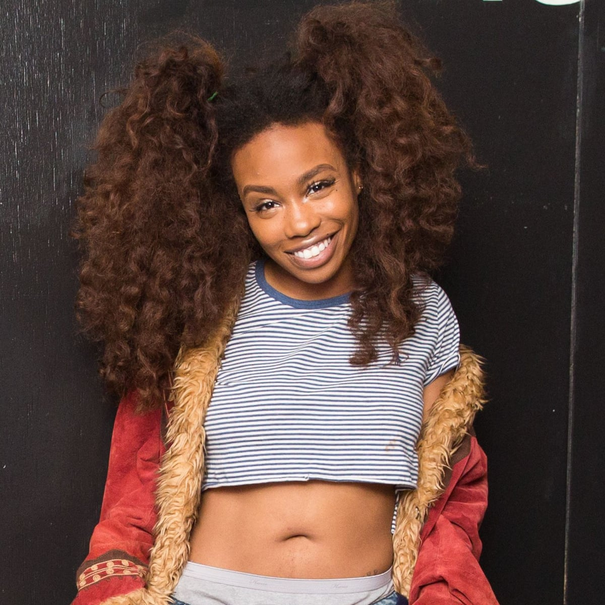

Is a Canadian rapper, singer, songwriter, and record producer. He received initial recognition from the mixtape Conflicts of My Soul: The 416 Story, released in August 2013.

SZA - Solána Imani Rowe
Is an American singer and songwriter. Born in St. Louis, Missouri, she began making music in the early 2010s, releasing two extended plays—See.SZA.Run and S—before signing with the hip hop record label Top Dawg Entertainment, through which she released Z, her third EP and first retail release.
G-Eazy - Gerald Earl Gillum
is an American rapper, singer and record producer.His first major-label album, These Things Happen, was released on June 23, 2014, and peaked at number 3 on the US Billboard 200. His second studio album, When It's Dark Out, was released on December 4, 2015. It featured the single "Me, Myself & I".